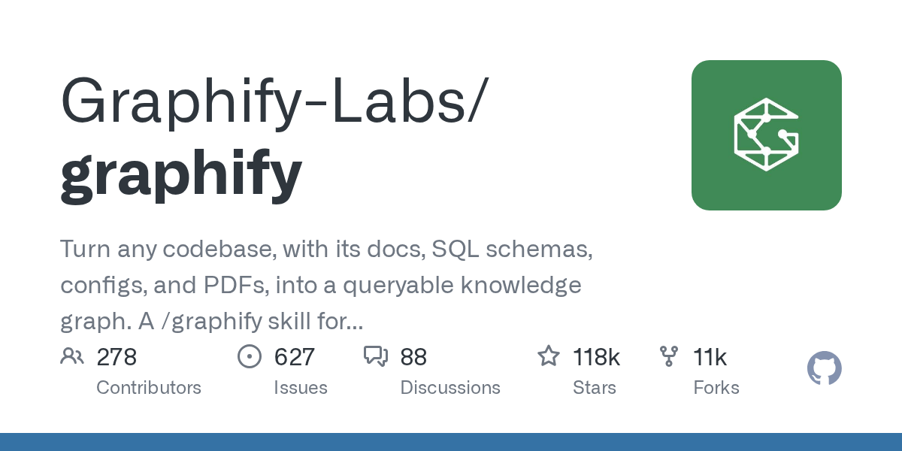

05 GitHub
Graphify-Labs/graphify
코드베이스를 그래프로 읽는 보조도구
★ 118,049이번 주 +1,711PythonApache-2.0 사내 사용 가능릴리스 v0.9.62 (09.15)최근 활동 09.15테스트 있음예제 없음AGENTS.md 있음

이 도구는 프로젝트 안의 코드와 문서를 한 번 훑어 그래프로 정리한다. 사용자는 파일을 줄줄이 열지 않고도 개념, 관계, 경로를 질문할 수 있다. 코드 파싱은 로컬에서 처리한다. 문서와 PDF, 이미지, 영상은 보조도구의 모델이나 별도 API 키로 의미 분석을 맡긴다.
무엇을 하는 물건인가
graphify는 코드베이스와 관련 문서를 질의 가능한 지식그래프로 바꾸는 도구다. AI 코딩 보조도구에서 /graphify를 실행하면 프로젝트의 개념과 연결을 한 장의 지도처럼 정리한다. 사용자는 파일명을 외워 검색하기보다 그래프에서 개념 경로를 따라가며 질문할 수 있다. 복잡한 규정 문서철에 색인표를 먼저 붙여 두고 찾는 방식에 가깝다.
스펙과 도입 조건
- Python으로 만들었다.
- Python 3.12 설치 안내가 있다.
- CLI 패키지로 설치한다.
- Dockerfile이 있다.
- Claude Code, Cursor, Codex, Gemini CLI, GitHub Copilot 등 여러 보조도구에 스킬 형태로 붙인다.
- 코드 분석은 외부 API 키 없이 로컬에서 돈다.
- 문서, PDF, 이미지, 영상 분석은 보조도구의 모델이나 설정한 API 키를 쓴다.
- 라이선스는 Apache-2.0이다.
- 최신 릴리스는 v0.9.62이고 날짜는 2026-09-15다.
이럴 때 쓰면 좋다
- 야간 배치 장애가 났을 때 관련 모듈과 설정 파일, 문서 사이 연결을 먼저 훑고 원인 후보를 좁힐 수 있다.
- 규정 문서 검색 기능을 고칠 때 코드와 PDF 문서, SQL 스키마가 어디서 만나는지 빠르게 찾을 수 있다.
- 인수인계 직후 낯선 서비스 구조를 파악할 때 핵심 개념과 의존 관계를 질문형으로 살펴볼 수 있다.
핵심 기능
- 코드를 tree-sitter AST로 파싱해 로컬에서 지식그래프를 만든다.
- 연결마다 EXTRACTED와 INFERRED 태그를 붙여 근거 수준을 구분한다.
- graph.html, GRAPH_REPORT.md, graph.json을 만들어 브라우저 탐색과 재질의를 지원한다.
대안 대비 차별점
이 도구는 벡터 저장소를 두지 않고 그래프 자체를 만든다. 그래서 질문 응답만 받는 데서 그치지 않고, 두 개념 사이 경로를 직접 추적할 수 있다. 코드 파싱도 LLM에 맡기지 않는다. 로컬의 결정적 파싱을 써서 무엇이 파일에 적힌 사실인지, 무엇이 도구가 해석한 연결인지 나눠 보여준다.
사내 도입 체크
- 코드 분석은 로컬 처리라서 소스코드가 외부로 나가지 않는다.
- 문서, PDF, 이미지, 영상은 외부 모델이나 API 키를 쓸 수 있어 데이터 반출 여부를 확인해야 한다.
- 유지보수 주체는 Graphify-Labs 조직 계정으로 보인다.
- 사내에서 이미 쓰는 코드 검색형 상용 도구를 일부 대체할 수 있지만, 실제 대체 범위는 확인 필요다.
주요 용어
지식그래프(Knowledge Graph): 개체와 관계를 노드·간선으로 표현한 구조 AST(Abstract Syntax Tree): 소스코드 문법 구조를 트리로 풀어낸 표현 tree-sitter(tree-sitter): 여러 언어 코드를 구조적으로 파싱하는 도구 벡터 저장소(Vector Store): 임베딩 검색용 데이터 저장 방식 추론(Inference): 원문에 직접 없지만 규칙으로 관계를 찾아내는 처리
원문 정보
제목: Graphify-Labs/graphify
최근 활동: 2026.09.15